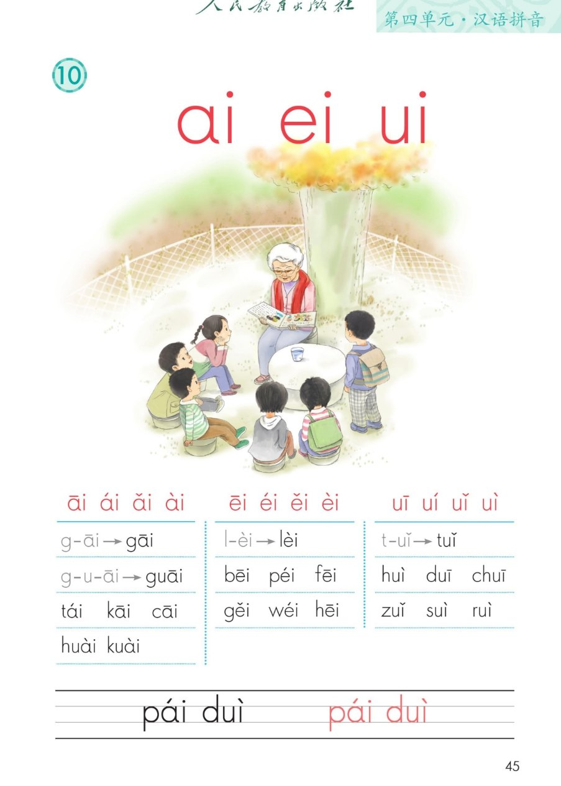
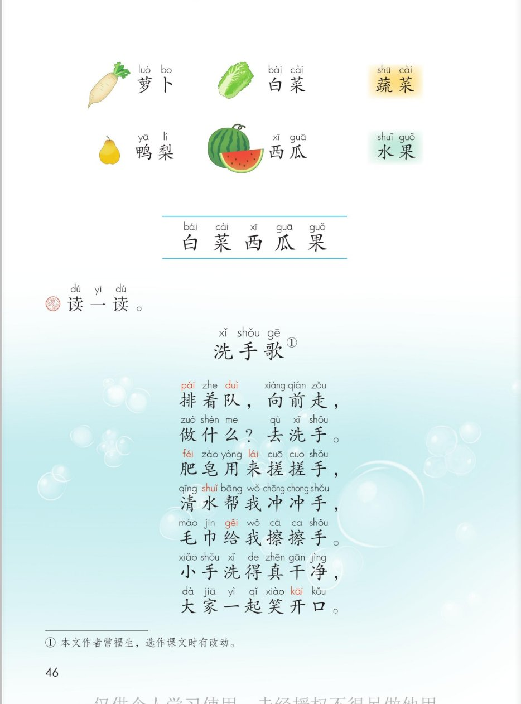

×
🔊 手机听不到声音怎么办？
① 先把手机
媒体音量调大 ，确认没开静音、没连蓝牙耳机；在微信里打开的，点右上角「⋯ → 用浏览器打开」。
② 还是没声音？到应用商店免费下载
Microsoft Edge 浏览器 （它自带朗读发声），用它打开本页面就能出声。
③ 换了 Edge 仍然没声音，说明这部手机的
硬件/系统不支持 网页朗读（多为老旧机型）；近几年买的新手机一般都能正常播放。
→ 打开声音自检
统编版 · 一年级上册 · 第四单元 · 汉语拼音 10
拼音 10 · ai ei ui
三个复韵母：a 和 i 手拉手，e 和 i 手拉手，u 和 i 手拉手复韵母 和三拼音节 guāi ，读儿歌《洗手歌》
认复韵母 四声 三拼 guāi 洗手歌 闯关 8 题
这一课学什么： 认识三个复韵母 ai、ei、ui——两个字母合在一起，成一个新韵母，读的时候要一口
气滑过去；学会它们的四个声调；再学三拼音节 guāi，拼读书上的音节，读词语「萝卜、白菜、蔬菜、
鸭梨、西瓜、水果」和儿歌《洗手歌》。发音方法以课本和老师教的为准。
课本第 45 页 点卡片听发音要点
复韵母小秘密： 两个字母手拉手 ，发音时一口气从前一个滑到后一个——ai、ei、ui 都是好朋友手拉手。🤝
课本第 45 页 点一格读一格，声调手势跟着比划
标调规则： 有 a 找 a，没 a 找 o、e，i、u 并列标在后 ——所以 ui 的声调标在 i 头上。⭐
课本第 45 页 点一格读一格，汉字提示帮你读
课本第 45 页 复习三拼口诀：声轻介快韵母响
g —
u —
āi →
guāi
g 是声母，读得轻 u 是介母，读得快 āi 是韵母，读得响
💡 三拼口诀复习： 声轻、介快、韵母响，三音相连要利落。guāi 就是「乖乖睡觉」的乖！🛏️
g —
u —
ài →
guài
guài：奇怪的怪
💡 课本下面两行还有 huài kuài ——坏掉的坏、快乐的快，都是三拼音节，拼的时候别忘了中间的 u。
课本第 45 页四线格 先看写法，再照着描红
写法提示： p 占中下格、d 占中上格；ui 的声调标在 i 上。字母之间留点空，别挤在一起。✏️
课本第 46 页 点词卡跟读，再看分类
识字条 · 连起来读
白 菜 · 西 瓜 · 果 —— 把识字条上的字连起来读一读、记一记。
💡 「萝卜」的「卜」读轻声 ，又轻又短；「蔬」是翘舌音 shū，「水」是翘舌音 shuǐ，读时舌头往上翘。
课本第 46 页 点一行读一行
《洗xǐ 手shǒu 歌gē 》
排pái 着队duì ，向前qián 走，
做什shén 么？去洗xǐ 手shǒu 。
肥皂zào 用来lái 搓搓手shǒu ，
清水shuǐ 帮我wǒ 冲冲手shǒu ，
毛巾jīn 给gěi 我wǒ 擦擦手shǒu 。
小手shǒu 洗得真zhēn 干净jìng ，
大家jiā 一起qǐ 笑xiào 开口kǒu 。
① 本文作者常福生，选作课文时有改动。
🎵 全首连读
读一读，做一做： 排队 → 搓手 → 冲手 → 擦手，边读边比划。饭前便后要洗手 ，讲卫生的孩子人人爱。🧼
点题目可以听题，点选项就判对错，答完自动算分
已经答 0 题，答对 0 题。
点图放大

第 45 页 · ai ei ui · 四声 · 拼读 · 四线格

第 46 页 · 萝卜白菜鸭梨西瓜 · 识字条 · 洗手歌